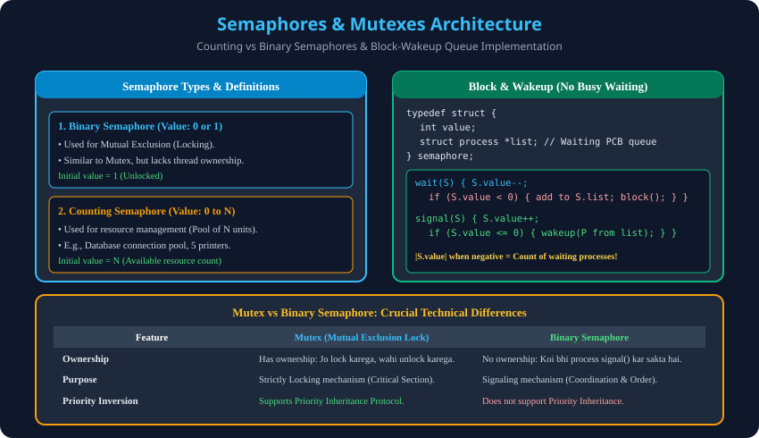

Syllabus Coverage: Gateway Classes Slides 60–75 | Counting vs Binary Semaphores, Block-Wakeup Implementation, Mutex vs Semaphore.
An integer variable accessed strictly via atomic wait() and signal() operations.

typedef struct {
int value;
struct process *list; // Queue of waiting PCBs
} semaphore;
void wait(semaphore *S) {
S->value--;
if (S->value < 0) {
add_to_queue(S->list, current_process);
block(); // Process goes to sleep; CPU freed!
}
}
void signal(semaphore *S) {
S->value++;
if (S->value <= 0) {
process *P = remove_from_queue(S->list);
wakeup(P); // Wakes up sleeping process to Ready queue
}
}| Feature | Mutex | Binary Semaphore |
|---|---|---|
| Mechanism | Strict Locking mechanism. | Signaling / Notification mechanism. |
| Ownership | Locked thread owns it; only owner can unlock. | No ownership; any process can signal. |
| Priority Inheritance | Supported (prevents priority inversion). | Not supported natively. |